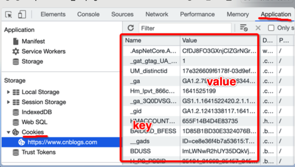
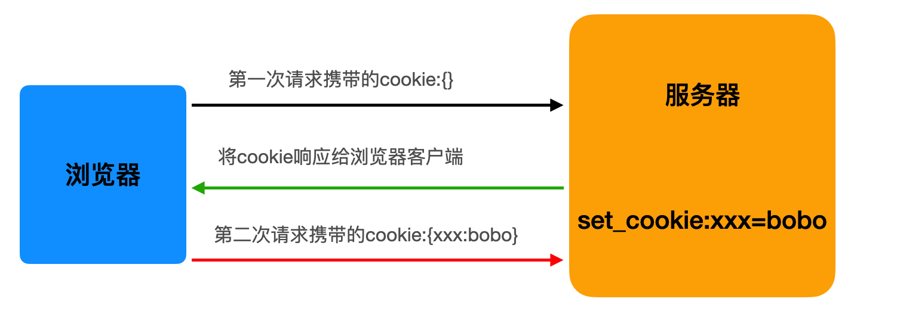
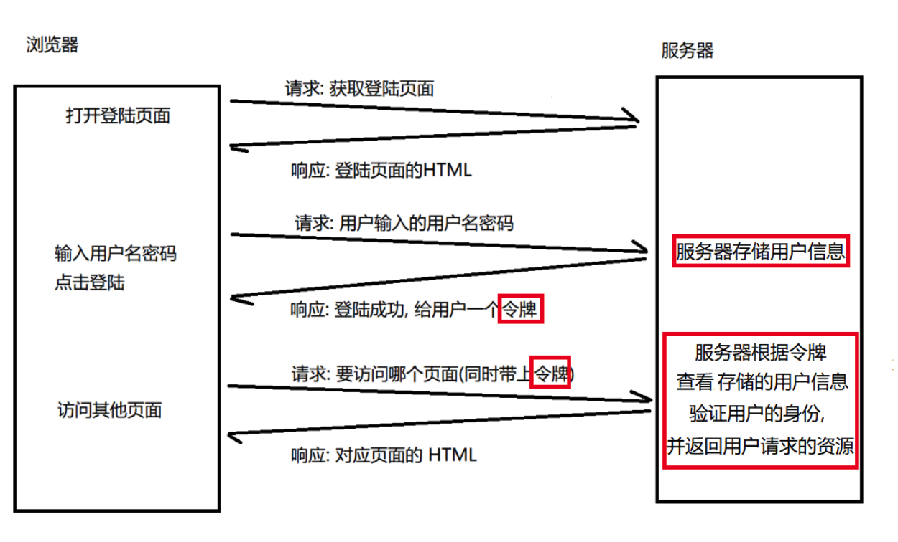

Cookie 的由来
大家都知道HTTP协议是无状态的。
状态可以理解为客户端和服务器在某次会话中产生的数据，那无状态的就以为这些数据不会被保留。每当有新的请求发送时,就会有对应的新响应产生。协议本身并不保留之前一切的请求或响应的相关信息。
一句有意思的话来描述就是人生只如初见，对服务器来说，每次的请求都是全新的，即使是同一个客户端发起的多个请求间。随着Web的不断发展,因无状态而导致业务处理变得棘手的情况增多，因此我们需要解决这个问题，也就是说要让http可以“保持状态”，那么Cookie就是在这样一个场景下诞生。
什么是 Cookie？
首先来讲，cookie是浏览器的技术，Cookie具体指的是一段小信息，它是服务器发送出来存储在浏览器上的一组组键值对，可以理解为服务端给客户端的一个小甜点，下次访问服务器时浏览器会自动携带这些键值对，以便服务器提取有用信息。
Cookie的本质就是一组数据（键值对的形式存在）
是由服务器创建，返回给客户端，最终会保存在客户端浏览器中。
如果客户端保存了 Cookie，则下次再次访问该服务器，就会携带 Cookie 进行网络访问。

cookie 的原理（重点）
-
cookie 的工作原理是：
- 浏览器访问服务端，带着一个空的cookie，然后由服务器产生内容，浏览器收到相应后保存在本地；
- 当浏览器再次访问时，浏览器会自动带上Cookie，这样服务器就能通过Cookie的内容来判断这个是“谁”了。
- cookie的内容是由服务器自主设计的，客户端无法干涉！

注意，不同浏览器之间是不共享Cookie的。也就是说在你使用IE访问服务器时，服务器会把Cookie发给IE，然后由IE保存起来，当你在使用FireFox访问服务器时，不可能把IE保存的Cookie发送给服务器。
- 举个例子：不同用户去访问登录某商城网站：

典型的案例：网站的免密登录
-
爬取雪球网中的咨询数据
- url：https://xueqiu.com/，需求就是爬取热帖内容
-
经过分析发现帖子的内容是通过ajax动态加载出来的，因此通过抓包工具，定位到ajax请求的数据包，从数据包中提取：
- url：https://xueqiu.com/statuses/hot/listV2.json?since_id=-1&max_id=311519&size=15
- 请求方式：get
- 请求参数：拼接在了url后面
import requests
import os
headers = {
'User-Agent':'Mozilla/5.0 (Macintosh; Intel Mac OS X 10_15_7) AppleWebKit/537.36 (KHTML, like Gecko) Chrome/98.0.4758.80 Safari/537.36',
}
url = 'https://xueqiu.com/statuses/hot/listV2.json'
param = {
"since_id": "-1",
"max_id": "311519",
"size": "15",
}
response = requests.get(url=url,headers=headers,params=param)
data = response.json()
print(data)
#发现没有拿到我们想要的数据
-
分析why？
- 切记：只要爬虫拿不到你想要的数据，唯一的原因是爬虫程序模拟浏览器的力度不够！一般来讲，模拟的力度重点放置在请求头中！
- 上述案例，只需要在请求头headers中添加cookie即可！
爬虫中cookie的处理方式（两种方式）：
手动处理：将抓包工具中的cookie赋值到headers中即可
-
缺点：
- 编写麻烦
- cookie通常都会存在有效时长
- cookie中可能会存在实时变化的局部数据
自动处理 (重点)
爬虫的session会话对象：
在爬虫里，session对象是一个非常常用的对象，这个对象代表一次用户会话（从客户端浏览器连接服务器开始，到客户端浏览器与服务器断开）。session对象能让我们在跨请求时候保持某些参数，比如在同一个 Session 实例发出的所有请求之间保持 cookie 。
基于session对象实现自动处理cookie。
-
- 创建一个空白的 session 对象。
-
2.需要使用 session 对象发起请求，请求的目的是为了捕获 cookie
-
注意：如果 session 对象在发请求的过程中，服务器端产生了 cookie，则 cookie 会自动存储在 session 对象中。
-
3.使用携带 cookie 的 session 对象，对目的网址发起请求，就可以实现携带 cookie 的请求发送，从而获取想要的数据。
- 注意：session 对象至少需要发起两次请求
-
第一次请求的目的是为了捕获存储cookie到session对象
-
后次的请求，就是携带cookie发起的请求了
import requests
from lxml import etree
headers = {
'User-Agent':'Mozilla/5.0 (Macintosh; Intel Mac OS X 10_15_7) AppleWebKit/537.36 (KHTML, like Gecko) Chrome/124.0.0.0 Safari/537.36'
}
#创建一个session对象
session = requests.Session()
'''
session对象可以像reqeusts一样进行请求发送
如果通过session进行请求发送，如果请求后会产生cookie的话，该cookie会被
自动保存到session对象中。
'''
#使用session对象发请求，获取cookie保存到该对象中
session.get(url='https://xueqiu.com/',headers=headers)
url = 'https://xueqiu.com/statuses/hot/listV3.json?page=3&last_id=295721605'
#使用了携带cookie的session发起请求
ret = session.get(url=url,headers=headers).json()
print(ret)